By Dave MacPherson | Posted Mar 4, 2020
In July 2019, I launched Pick224, a hockey analytics website containing data from over 15 hockey leagues across the world with a focus on junior hockey and the NHL draft. To compile this data, I first scrape all the individual game summaries of each league, then clean the data, total up all the stats, and join the results with each player’s biographical information.
This week, I rebuilt my Canadian Hockey League (CHL) scrapers from scratch. In what follows, I’ll describe how I found the data I needed and how I coded the scrapers in Python.
I will not be sharing the previous versions of my code in this article, for they are wretched and incoherent. But, the code worked. If you’re new to coding web scrapers or are just starting a project, I’d like to stress the importance of writing code that gets you the data you need, even if your code is inefficient and your data requires a lot of cleaning. Then, as you slowly begin to better understand your data and your needs, make small improvements. Eventually, you’ll have a great grasp of your data and some decent code.
Understanding the data
Before I start writing a scraper, I always want to know what data is available and what I need. For the CHL, I needed the following:
• A listing of every goal scored in each game; and
• A listing of every team’s lineup for each game
In this article, I’ll only dive into extracting the lineups.
I found the data I needed on one page for each game on the league’s official website. As an example, here’s a game summary for a recent OHL game.
The game’s lineups are listed in the “Game Summary” tab:
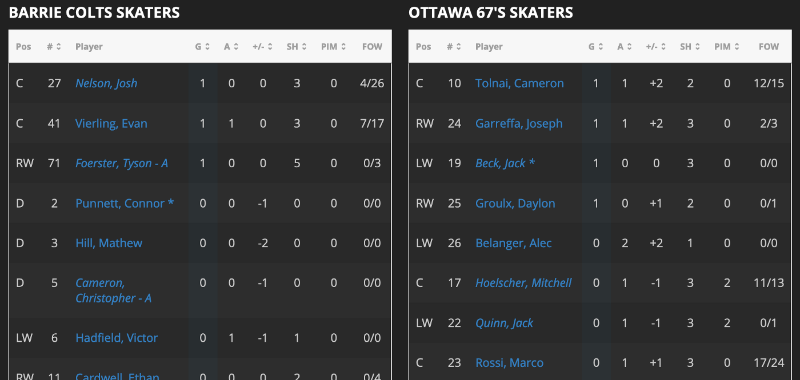
I could have scraped all the text from this page’s source to get what I needed, but there’s a much more organized way to get the data.
To find how and where the data is stored, I opened the game summary in Firefox, right-clicked, and clicked “Inspect Element” to bring up Firefox’s handy Inspector tool.
Navigating to the Network tab, refreshing the page, and filtering for “XHR” brought up all the data that goes into the webpage:
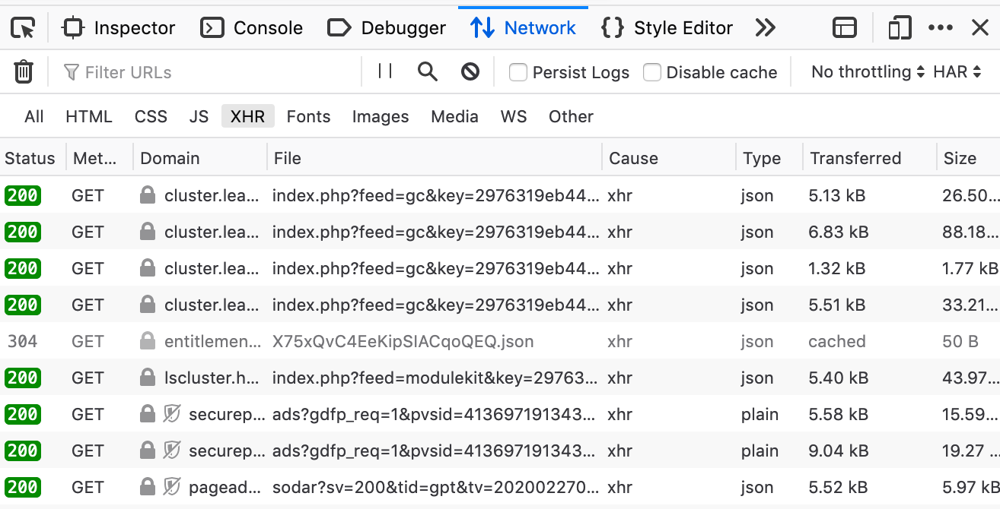
By clicking each of these files and looking at the Response tab, I could see what data was sent in order to create the lineups. The file ending in tab=gamesummary is the file containing the data for each team’s lineup in a clean JSON tree:
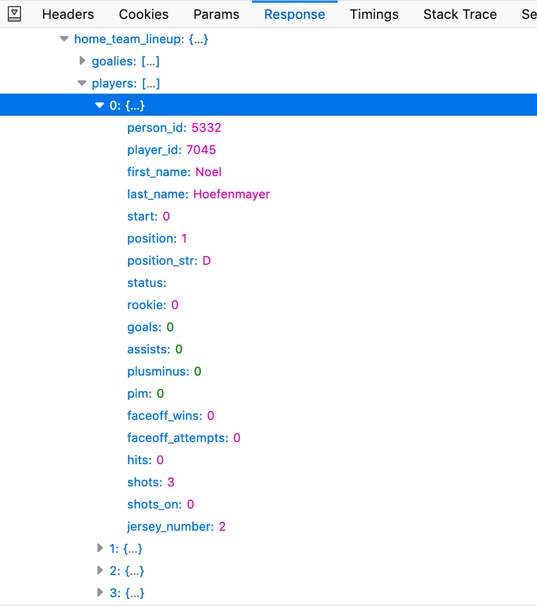
The Params tab includes the parameters the site uses to populate the Response with the specific game’s data. In this case, the most important parameter is the “game_id”, which is unique for each game:
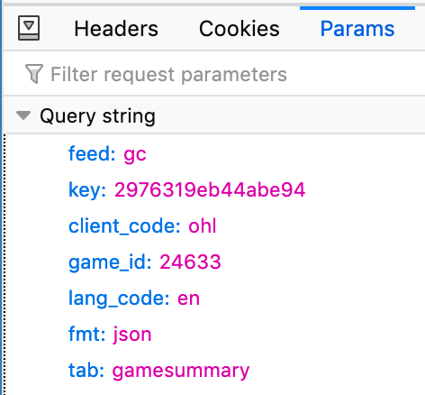
Going back to the Network tab, I accessed the full gamesummary file by right-clicking and selecting “Open in New Tab”. The result is one big dictionary containing all of the game’s data:
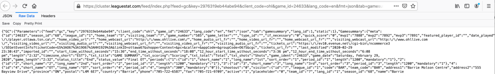
All of the parameters above become part of the URL: https://cluster.leaguestat.com/feed/index.php?feed=gc&key=2976319eb44abe94&client_code=ohl&game_id=24633&lang_code=en&fmt=json&tab=gamesummary
My scraper needed to pull the lineups from these pages, and I then had to organize the data in a readable format.
Writing the Python code
Now that I knew where to find the data I needed, it was time to write the Python code to get that data.
First, I imported the different Python libraries I would be using and specified a file to write the results to:
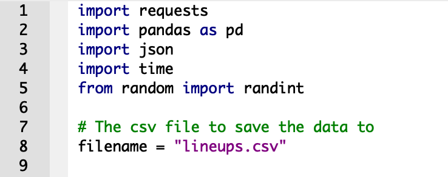
Next, I specified the game_id for the game I was scraping, along with the URL I was pulling the data from. I used Python’s requests library to send a request to the specified URL so I could grab the data:
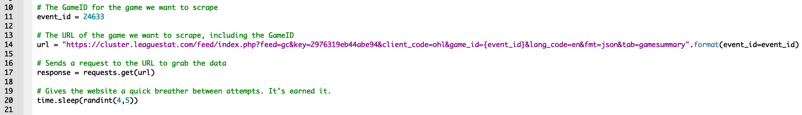
The next step is to pull the JSON from the webpage:
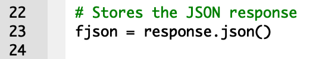
This code pulls the entire JSON code we saw in Firefox above:
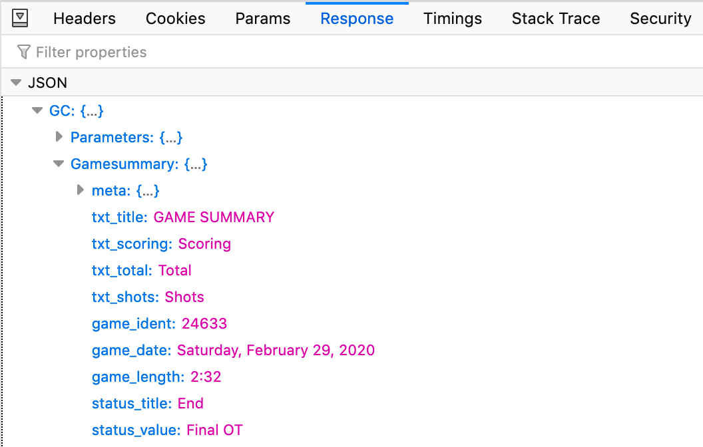
The JSON contains a lot of data about the game:
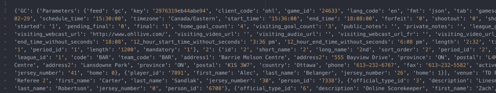
The home team’s lineup is found in the path GC -> Gamesummary -> home_team_lineup -> players and the away team’s in GC -> Gamesummary -> visitor_team_lineup -> players. This code extracts only those lineups:
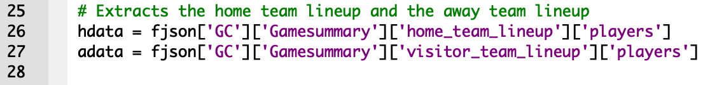
And this code converts the lineups to a much more readable format, a DataFrame, using Python’s pandas library:
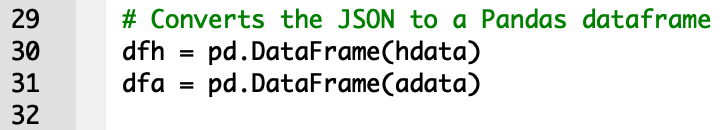
When printed, the home team lineup DataFrame is a table containing columns for all the different available data and rows for each player:
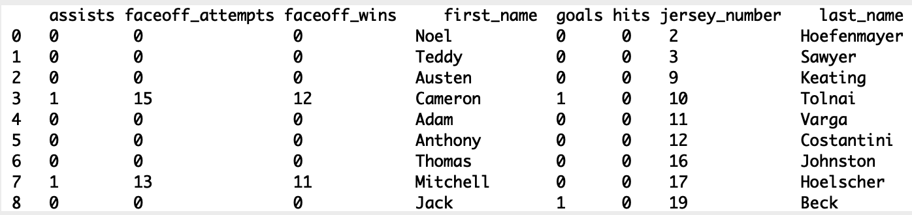
The DataFrame does not include the game_id, which would be very useful when I was ready to pull more than one game. This code adds a column containing the game_id and a column specifying whether each player was on the home or away team:
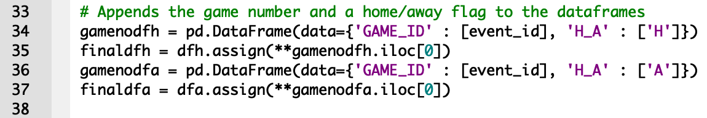
I then used this code to specify which columns I wanted to keep and in what order:
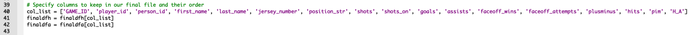
Here’s the resulting DataFrame for the home team’s lineup:
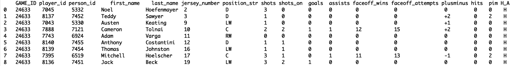
This looks good! Lastly, I wrote each lineup to the CSV file I specified in the first lines of the code, including the column headers only in the first line so they don’t show up twice:
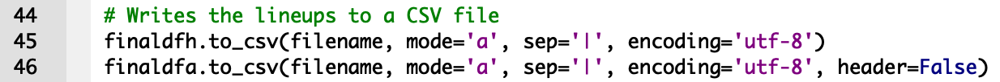
The result is a tidy pipe-delimited CSV file containing all the information I wanted from the game’s lineups:
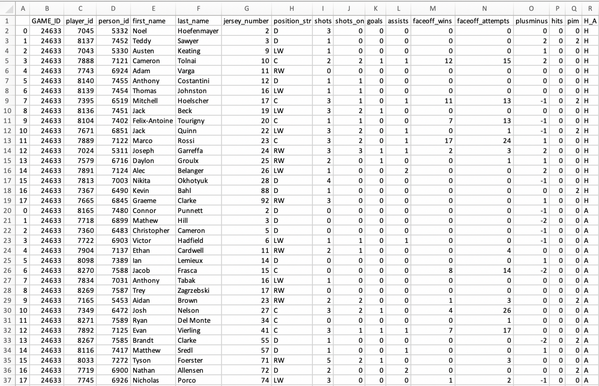
Here’s all the code at once:
After I had working code for pulling one game’s data, I found the game_ids for each game and optimized my code to pull every game in one go. I then pulled all of the goal data from the same JSON code, equipping me with everything I needed to compile the stats found on Pick224.
If web scraping isn’t for you and you’d rather jump right into data analysis, feel free to download any of the data available on Pick224. If you do something cool with the data, please let me know on Twitter!